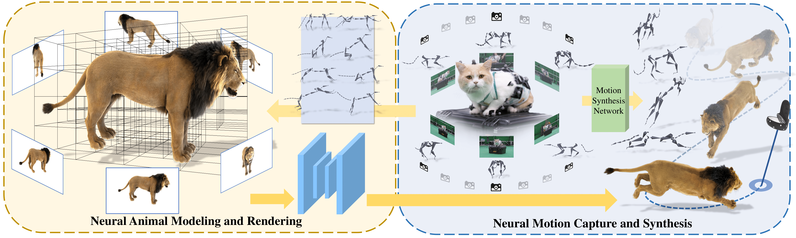

We, humans, are entering into a virtual era and indeed want to bring animals to the virtual world as companions. Yet computer-generated furry animals remain limited by tedious offline rendering and lack practical interactive motion control. ARTEMIS introduces a neural modeling and rendering pipeline for articulated neural pets with appearance and motion synthesis. The system combines an efficient octree-based animal representation, volumetric rendering, a neural shading network, multi-view animal motion capture, and neural character control, enabling real-time animation, photorealistic rendering, and immersive interaction with virtual animals in VR.

Given multi-view RGBA images of traditionally modeled animals rendered in canonical space, ARTEMIS first extracts a sparse voxel grid and allocates a corresponding feature look-up table together with an octree for efficient indexing. The character is then posed to training poses using the rig of the traditional animal asset, followed by efficient volumetric rendering to generate view-dependent appearance feature maps and coarse opacity maps. A convolutional neural shading network decodes these maps into high-quality appearance and opacity images, while adversarial training further enhances high-frequency details.
We show synthesized RGBA results of different neural volumetric animals in representative motions.
Lion, cat, and tiger.
Wolf, panda, and bear.
Dog, duck, and fox.
ARTEMIS also supports VR applications with multiple levels of interaction. Users can view neural pets from both third-person and first-person perspectives, issue low-level commands such as jump, move, and sit, provide high-level destination guidance, and interact with virtual animals that can follow, accompany, and explore their environment autonomously.
Viewing and low-level interaction.
Commands and movement control.
Companion mode and free exploration.
The authors thank Junyu Zhou and Ya Gao from DGene Digital Technology Co., Ltd. for processing the CGI animal models and motion capture data. We also thank Zhenxiao Yu and Heyang Li from ShanghaiTech University for producing supplementary video and figures.
@article{10.1145/3528223.3530086,
author = {Luo, Haimin and Xu, Teng and Jiang, Yuheng and Zhou, Chenglin and Qiu, Qiwei and Zhang, Yingliang and Yang, Wei and Xu, Lan and Yu, Jingyi},
title = {Artemis: Articulated Neural Pets with Appearance and Motion Synthesis},
year = {2022},
issue_date = {July 2022},
publisher = {Association for Computing Machinery},
address = {New York, NY, USA},
volume = {41},
number = {4},
issn = {0730-0301},
url = {https://doi.org/10.1145/3528223.3530086},
doi = {10.1145/3528223.3530086},
journal = {ACM Trans. Graph.},
month = {jul},
articleno = {164},
numpages = {19},
keywords = {neural representation, dynamic scene modeling, novel view synthesis, neural rendering, neural volumetric animal, motion synthesis}
}